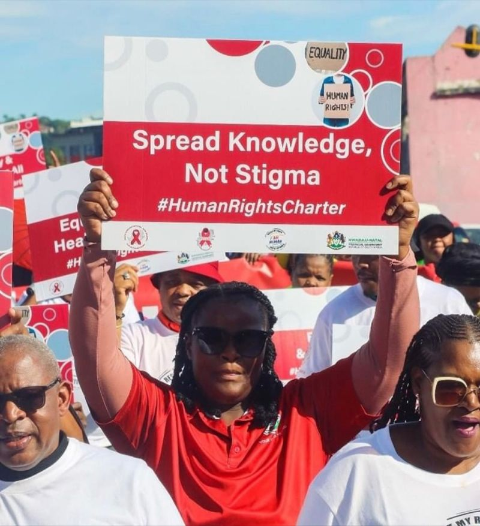
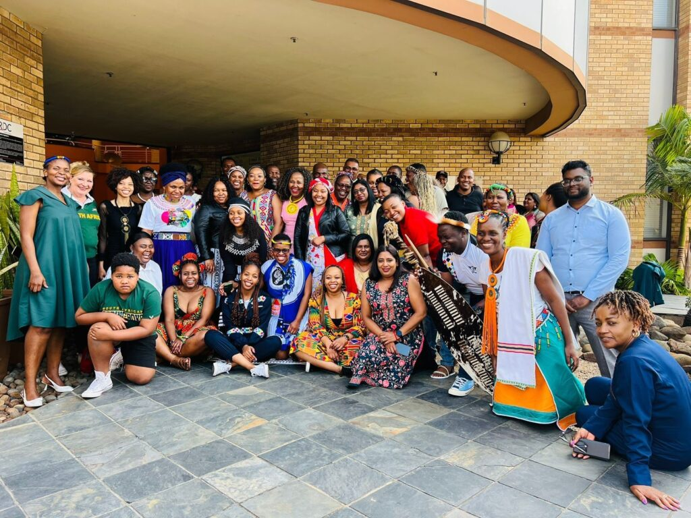
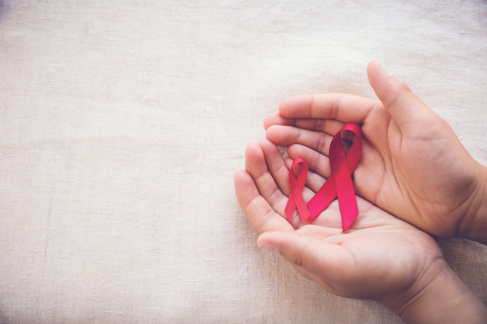

The AIDS Foundation of South Africa is leading the charge against HIV/AIDS by implementing a multi-faceted approach that combines prevention, treatment, and support services. Since its inception in 1988, the organization has been dedicated to delivering high-quality services to vulnerable communities, with a focus on promoting equality, education, and access to basic services.
The foundation's strategy is built around addressing the root causes of the epidemic, including social and economic factors that exacerbate its impact. By targeting high-risk populations and areas, the organization aims to maximize its impact and bring about meaningful change.
At the heart of the foundation's work is the UNAIDS 95-95-95 global target, which aims to ensure that:
95% of people living with HIV know their status,95% of those who know their status receive treatment,95% of those who know their status receive treatment,95% of those on treatment achieve viral suppression
By working towards these ambitious targets, the AIDS Foundation of South Africa is committed to closing the gap in HIV prevention, testing, and treatment, ultimately creating a healthier and more equitable society for all.
The AIDS Foundation of South Africa (AFSA) was established and began supporting projects focused on palliative care, support groups, and HIV/AIDS education. They worked with organizations like St. Luke's Hospice and the AIDS Support and Educational Trust.
1996
Gary Adler was appointed as AFSA's Executive Director, and the head office was moved to Durban. AFSA began providing support to programs working with Orphaned and Vulnerable Children (OVC) and their caregivers.
2000
AFSA secured a grant from the European Commission, allowing them to broaden their support to community-based organizations in KwaZulu Natal, the Free State, and Mpumalanga. The XIII International AIDS Conference was held in Durban, highlighting the need for action against HIV/AIDS.
2004
AFSA received funding from the Swedish International Development Cooperation Agency (Sida) to support emerging community-based organizations and national advocacy groups.
2006
AFSA received a grant from the Atlantic Philanthropies to strengthen community-level programming and establish a Capacity Building Department.
2010
AFSA introduced a Culture and Health Program, supporting community projects that explored the impact of cultural practices on health. They also secured funding from the Centers for Disease Control and Prevention to implement an HIV Combination Prevention Program in KwaZulu Natal.
2012
AFSA was appointed as a Provincial Implementing Agent for the Community Work Program (CWP) in KwaZulu Natal, deploying and supervising participants in community projects.
2014
AFSA established the Ikusasa division to manage community development and economic strengthening projects, including food security, climate-smart agriculture, and financial literacy.
2015
AFSA was selected as one of eight Principal Recipients for the Global Fund Grant to South Africa, managing the implementation of prevention programs and community systems strengthening.
2016
AFSA was contracted by the Global Fund to implement various components of the grant, including prevention programs for vulnerable populations and community systems strengthening.
Prevention: Educating communities about HIV/AIDS and promoting healthy behaviors
- Treatment: Providing access to quality healthcare services and treatment for those living with HIV/AIDS
- Child Protection and Wellbeing: Supporting vulnerable children and ensuring their rights are protected
- Community Empowerment: Building resilient communities equipped to face the challenges posed by HIV/AIDS
AFSA's mission is built on the principles of compassion, innovation, and resilience. They strive to:
Address the social and structural drivers of HIV/AIDS
Integrate interventions into a broader sexual and reproductive health framework
Focus on geographies and populations with elevated risk, maximizing prevention impact efficiently
When it comes to the vision of the organization AFSA focuses on:
Addressing Structural Drivers: AFSA recognizes that HIV/AIDS is deeply rooted in social and relational phenomena influenced by environmental, cultural, political, and socio-economic factors. They utilize strategies to address these drivers and integrate interventions into a broader sexual and reproductive health framework.
Empowering Communities: By providing access to quality healthcare, education, and economic opportunities, AFSA aims to build resilient communities equipped to face the challenges posed by HIV/AIDS.
Improving Health Outcomes: AFSA works to reduce HIV, STIs, and TB infections, while promoting awareness and understanding of these diseases.
| Team Members | Professions |
|---|---|
| Mdu Mntambo | Chief Operating Officer |
| Sugan Armoogum | Finance Head |
| Chikosha Mapanga | Internal Audit Manager |
| Thilda Nel | Boar Member- HR and Ethics Subcommitee Chairsperson |
| Monene Mathiba | Secretary of the Board |
| Philani Dlamini | Board member- Audit and Risk Commitee Chairsperson |
| Gugu Ngubane | Board Member- Operations Commitee |
| Dr Thandi Ndlovu | Operations Subcommitee Chairsperson |
The AIDS Foundation of South Africa (AFSA) focuses on addressing the social and structural determinants of HIV and TB, strengthening community systems for improved health outcomes, ensuring universal access to services while protecting human rights, and driving organizational effectiveness. AFSA also aims to reduce stigma and discrimination, support vulnerable populations, and provide customized interventions targeting priority populations to maximize prevention impact.
  